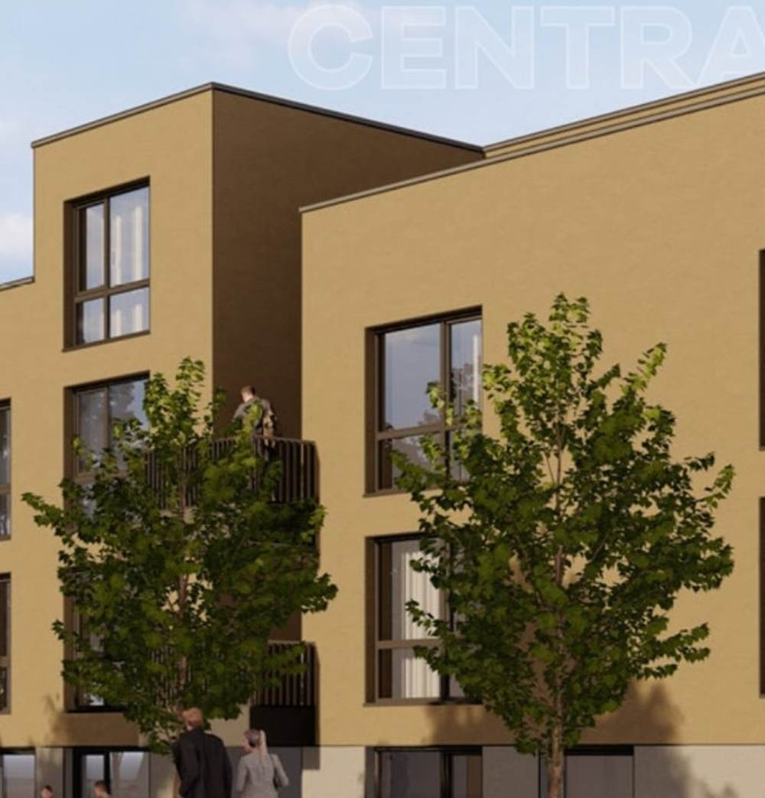
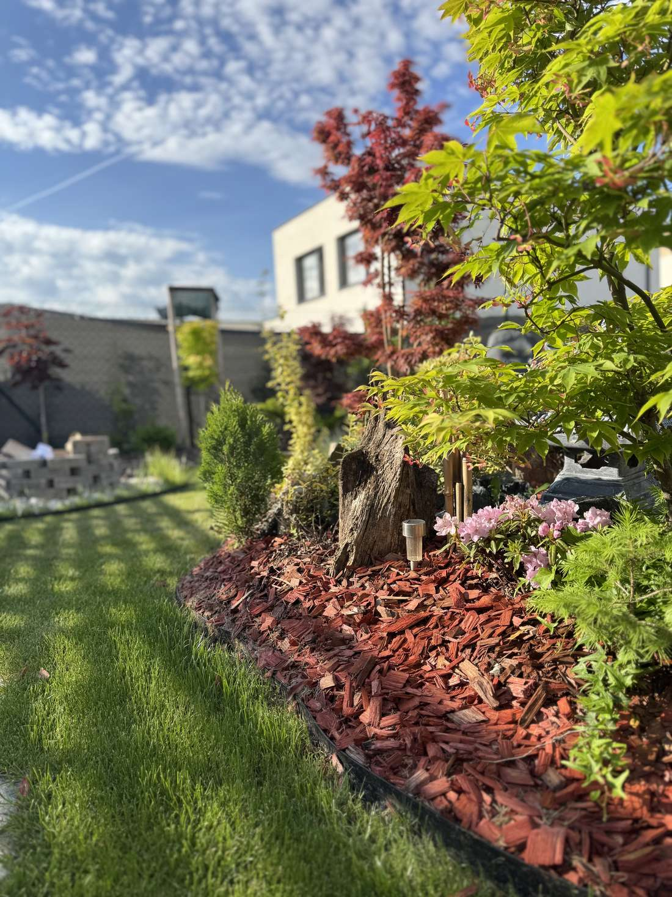

Wir verwandeln Außenräume in lebendige, ruhige Gärten.
GreenWitcher plant, gestaltet und pflegt Gärten, inspiriert von der Klarheit japanischer Landschaftsgestaltung — durchdacht, saisonal und so angelegt, dass sie mit der Zeit immer schöner werden.
Leistungen
Gartenplanung
Ganzheitliche Gartenkonzepte — von trockenen Kieshöfen bis zu üppigen Pflanzflächen — abgestimmt auf Licht, Jahreszeiten und die tatsächliche Nutzung des Raums.
Planung entdecken →Bepflanzung & Pflege
Laufende Pflege, fachgerechter Rückschnitt und saisonale Pflanzkonzepte, damit der Garten das ganze Jahr über harmonisch wirkt — nicht nur im Frühling.
Pflege entdecken →Wegebau & Wasser
Wege, Steinkompositionen, Holzterrassen und Wasserelemente — handwerklich angelegte Becken und Teiche aus natürlichen Materialien, die sich harmonisch in die Landschaft einfügen.
Umsetzung entdecken →Projekte

"Rendez," Bratislava – Rača
Umfassende Pflege der Außenanlagen einer Wohnanlage im Bratislavaer Stadtteil Rača — von Pflanzbeeten bis zu gemeinschaftlich genutzten Innenhöfen.
- StandortBratislava – Stadtteil Rača
- Status2023 – 2025
- Webseiterndz.sk

Vila Byty pri Lesíku, Miloslavov
Ganzjährige Pflege der Außenanlagen eines Wohnkomplexes in Miloslavov — einschließlich Pflanzbeeten, Rasenflächen und gemeinschaftlichen Grünbereichen.
- StandortMiloslavov
- Statusseit 2023
- Webseitevilabyty.sk

Central Park, Miloslavov
Ganzjährige Pflege der Außenanlagen eines Mehrzweckgebäudes in Miloslavov, einschließlich Terrassen, Pflanzbeeten und umliegenden Rasenflächen.
- StandortMiloslavov
- Statusseit 2023



„Ein Garten ist niemals fertig — er wird gepflegt. Wir gestalten Räume so, wie Wasser Stein formt: langsam und mit Aufmerksamkeit.“
Lassen Sie uns Ihren Garten gemeinsam gestalten.
Erzählen Sie uns von Ihrem Außenraum — seiner Größe, den Lichtverhältnissen und der Atmosphäre, die Sie sich wünschen. Anschließend vereinbaren wir gerne einen Besichtigungstermin.